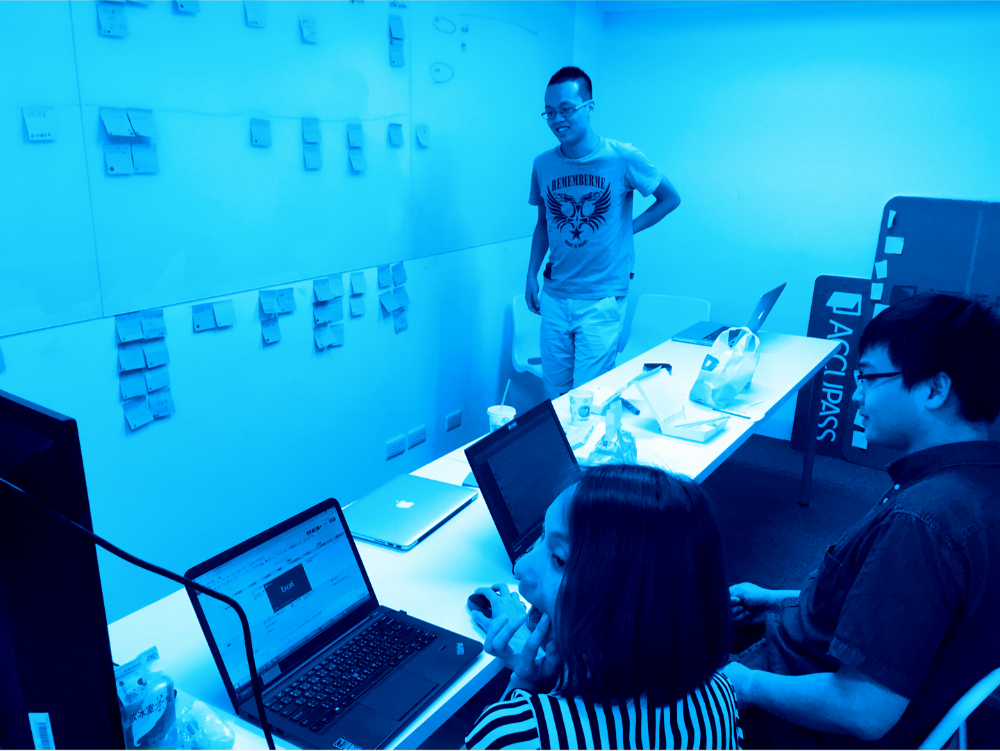

研究以及價值
在對使用者了解有限的情況下，團隊的決策通常都要仰仗成員或是單一人員的經驗判斷，決策在認知不同時容易會有矛盾，範圍也會受限在小族群的認知範圍內。UX 研究可以幫助團隊拓寬不同於使用者的刻板印象。
問券、訪談、整理
我們對不同的使用者發出問券，以及現場錄音的訪談，係場的操作習慣紀 錄。並將產品的使用分為分成11個階段，將收集到的資料個別整理到各自屬於的階段。

視覺化旅程圖
UX研究必須是除了參與的人之外，都能一同了解的結果，我們需要能跟參與程度有限或是認知習慣不同的人都能溝通的結果。
我們根據Adaptive Path 的視覺溝通方式繪製了自己的旅程圖，讓所有人都能看懂研究的結果，才不會淪為少數團隊成員才能了解的結果。
過程以及價值
除了成果的資料之外，研究的過程有許多對於團隊非常好的影響，UX並不一定是每個人都接觸過的範圍，每個人的邏輯習慣也不同，過程中成員會開始了解猜想的使用者與實際上的差異，往後對於使用者的認知也更能避免淪為個人的成見或是猜想。 事實上，要完全貼近使用者是不可能的事情，就算做了研究，畫了旅程圖，進行這些過程的畢竟是團隊的成員，沒有人能避免參雜成見到研究資料內。研究的精神主要還是在鼓勵嘗試，“了解使用者”、“貼近使用者”聽起來理所當然，但如果沒有走過這樣的過程，團隊更沒有機會走近使用者。
